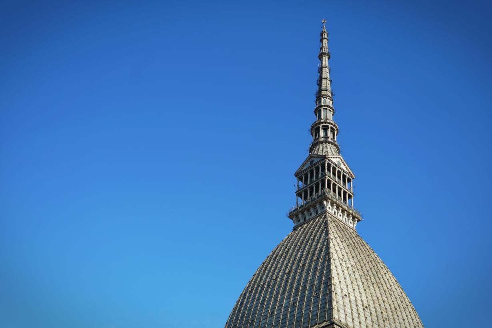
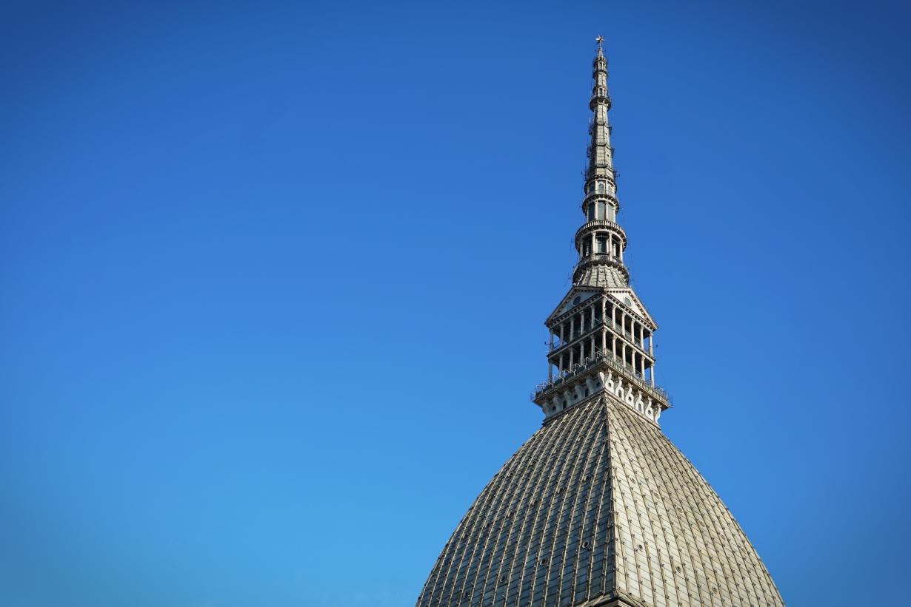
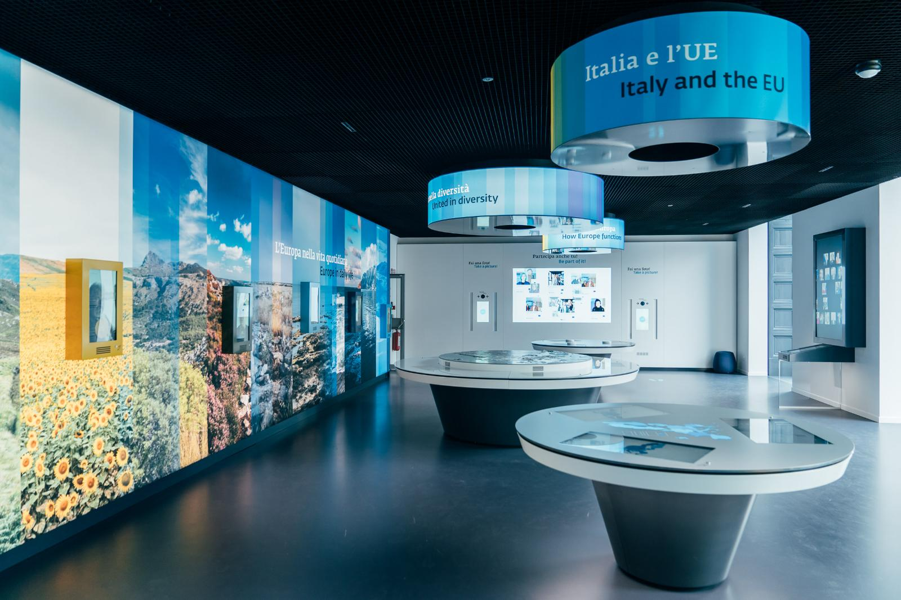
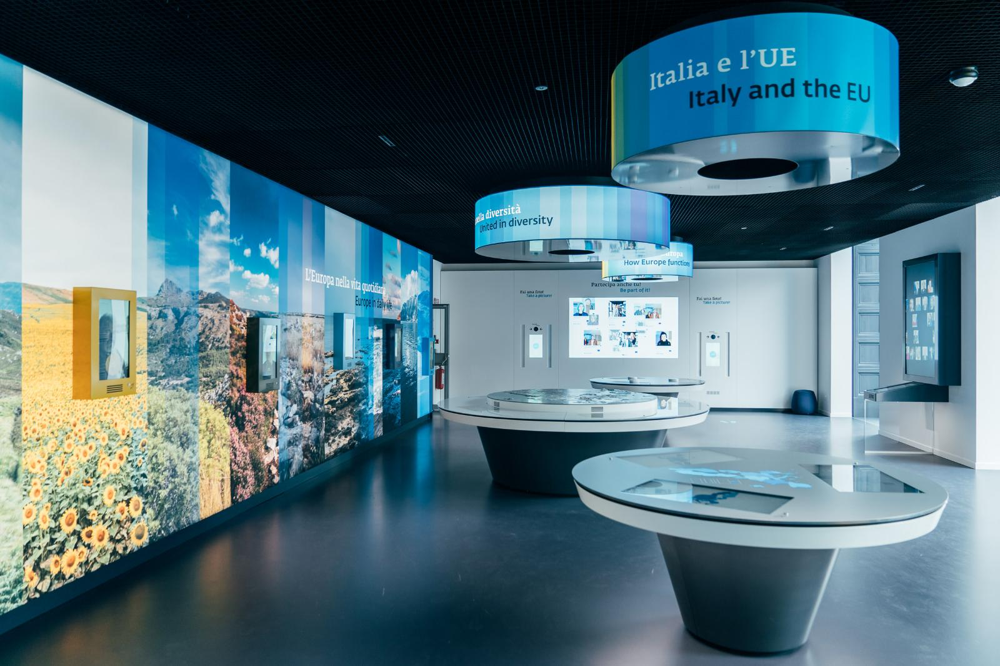
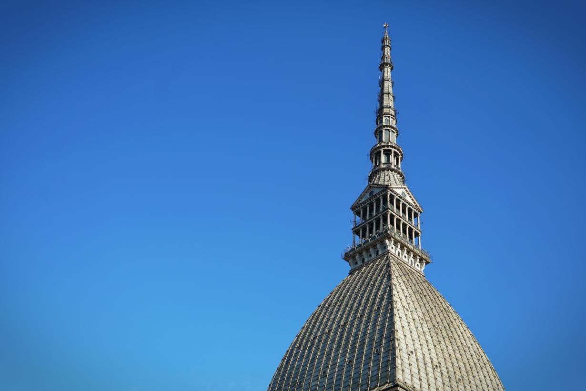
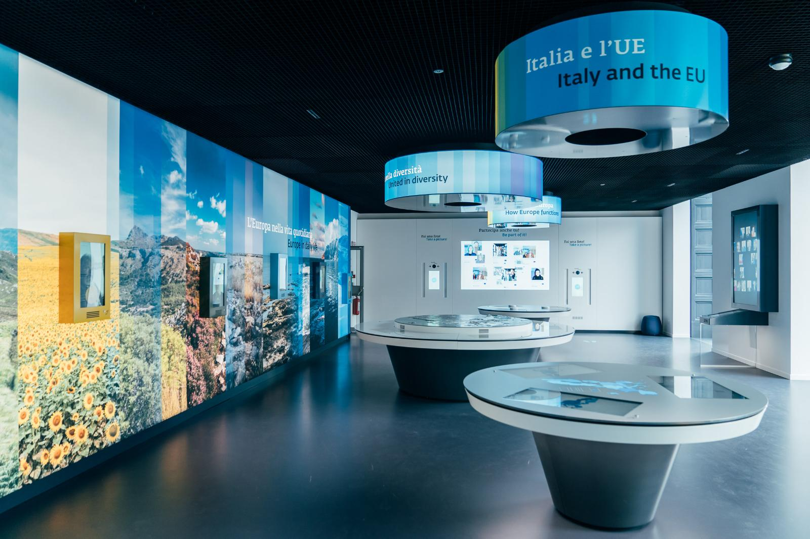

 

Nell’ambito del Progetto dell’Università di Bologna – Campus Forlì, Punto Europa "EURopean Education aKAdemy – EUREKA", che offre formazione interdisciplinare per docenti e promuove la cittadinanza europea, dal 10 al 12 luglio, i nostri docenti Claudia Caccia, Antonella Gualteroni e Luigi Marchese hanno partecipato insieme ad altri colleghi italiani a un viaggio di studio a Bruxelles con una visita alle istituzioni europee. L'11 luglio, il gruppo ha visitato il Parlamento Europeo, esplorando l'architettura e il funzionamento dell’istituzione con l’aiuto delle guide della Commissione europea. Successivamente, hanno visitato la Casa della Storia Europea nel Parco Léopold, dove hanno approfondito la storia e l’identità culturale dell’Europa tramite esposizioni multimediali. Nel pomeriggio, i docenti hanno incontrato il Team Jean Monnet della DG-Education, Youth, Sport and Culture per discutere di istruzione e politiche giovanili. Hanno anche visitato la Delegazione dell'Emilia-Romagna presso l'UE, scoprendo il ruolo delle rappresentanze regionali a Bruxelles nel facilitare il dialogo tra istituzioni europee e realtà locali. Durante il soggiorno, i professori hanno avuto anche il tempo di esplorare autonomamente Bruxelles, arricchendo ulteriormente la loro esperienza. La visita ha ispirato la creazione di un percorso educativo per gli studenti della quinta classe dell’ITIS Paleocapa, con l'obiettivo di organizzare una visita a Bruxelles finanziata da fondi europei.
Il progetto CONOCO (Coping with NO mobility during Corona Virus times: Learning from each other), finanziato dalla Commissione Europea e gestito dall'Associazione Europea dei Coordinatori Erasmus, si è svolto dal ottobre 2020 a maggio 2022. In risposta alla pandemia di Covid-19, che ha imposto restrizioni senza precedenti alla mobilità e alla vita quotidiana in tutta Europa, il progetto ha mirato a raccogliere e condividere le esperienze e le buone pratiche di diverse categorie di persone e organizzazioni. Durante il lockdown, milioni di europei sono stati costretti a rimanere a casa e a rivedere le loro modalità di lavoro, studio e vita quotidiana. Questo ha spinto le persone a cercare soluzioni innovative per adattarsi. Il progetto CONOCO ha quindi avuto come obiettivo principale quello di raccogliere testimonianze e pratiche efficaci da vari gruppi, inclusi lavoratori, educatori, studenti, genitori, nonni e persone con disabilità. Il progetto ha messo in luce come le persone e le organizzazioni hanno gestito le sfide del lavoro e dell'apprendimento a distanza, mantenendo o migliorando produttività e creatività. Sebbene non abbia prodotto risultati intellettuali specifici, ha offerto un ricco panorama di esperienze e soluzioni utili per affrontare sfide future simili.

